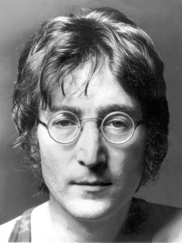

 John Ono Lennon (születési nevén John Winston Lennon; Liverpool, 1940. október 9. – New York, 1980. december 8.) MBE (a Brit Birodalmi Rend tagja), a 20. század egyik legnagyobb hatású énekese, zeneszerzője, költője és a The Beatles gitárosa. Az 1960-as évek folyamán Paul McCartneyval való együttműködése komoly hatást gyakorolt a beatzene és a rock fejlődésére, a komolyabb és politikai üzenetet hordozó irányba terelve azt.
Lennon dalai tele vannak fájdalommal és reménnyel. Zenéje hol vidám, hol pedig nagyon komor volt. Dalszövegeiben személyes és karrierjéhez fűződő vágyait, gondolkodásmódját, a hírnév árnyoldalait és az aktuális eseményekről alkotott véleményét fogalmazta meg. McCartneyval sikerült meghonosítania az elektronikus effekteket a rockzenében, lehetővé téve ezzel számtalan zenei stílus kialakulását.
Lennon a televízióban, filmekben (mint az 1964-es Egy nehéz nap éjszakája), sajtótájékoztatókon és interjúkban tanúbizonyságot tett személyiségének lázadó, kritikus oldaláról, gyors észjárásáról és szarkasztikus humoráról. Munkáiban előszeretettel alkalmazta a szándékos megtévesztést. Zenei karrierje mellett békeaktivista, író, színész és festőművész is volt. 1980. december 8-án New Yorkban Mark David Chapman gyilkolta meg.
2002-ben a BBC egy közvélemény-kutatás keretében összeállította a 100 legnagyobb brit névsorát, melyen Lennon a 8. lett (Paul McCartney a 19., George Harrison a 62. lett).